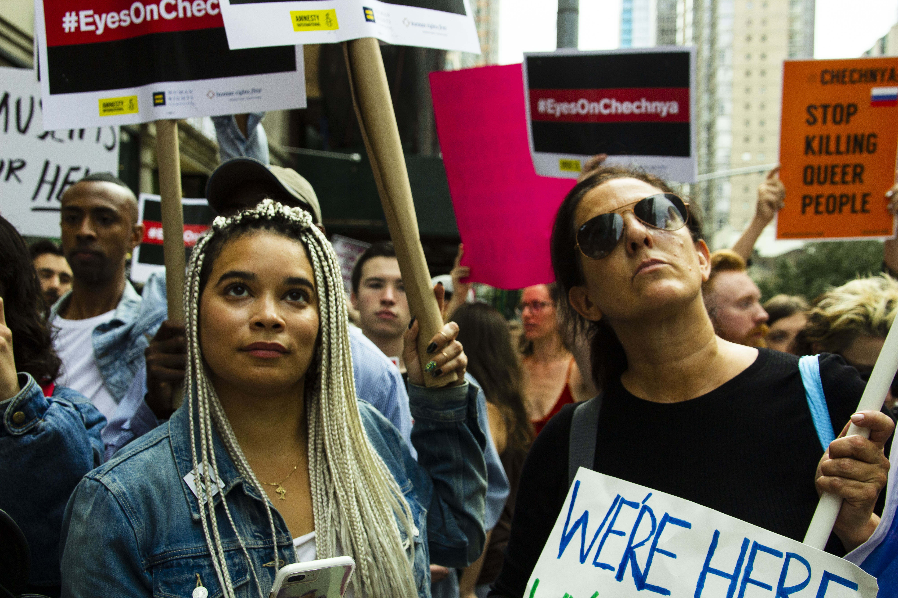

Ms. Hoffman is a freelance photojournalist based in Brooklyn, New York covering stories relating to art, health, and human-interest. Author to numerous longform journalism pieces, Ms. Hoffman strives to explore the human condition in all her work. All photographs shown on this website are Ms. Hoffman's creative property unless otherwise stated, and her photographs may not be used by any person or company without her explicit written permission.
Shot for Earther and Gizmodo Media Company, Ms. Hoffman covered the 2019 Climate Strikes from the perspective of student protesters.

Photo essay and creative project for Lori Grinker's Transmedia class, "From One to Ten" explores the lives of four young adults living with autoimmune diseases.

The wedding of Carolyn and Geoffery Miller. Vows is shot on 35mm film, and is the only one of Ms. Hoffman's projects to be done so.

In 2017 Ms. Hoffman attended a march led by Voices4Chechnya, an LGBTQ+ activist group.
In 2017, Ms. Hoffman was one of the twenty students lucky enough to go to Prague with National Geographic, working with four photographers for twelve days to capture the scene, shoot raw, and learn the ins and outs of photojournalism.